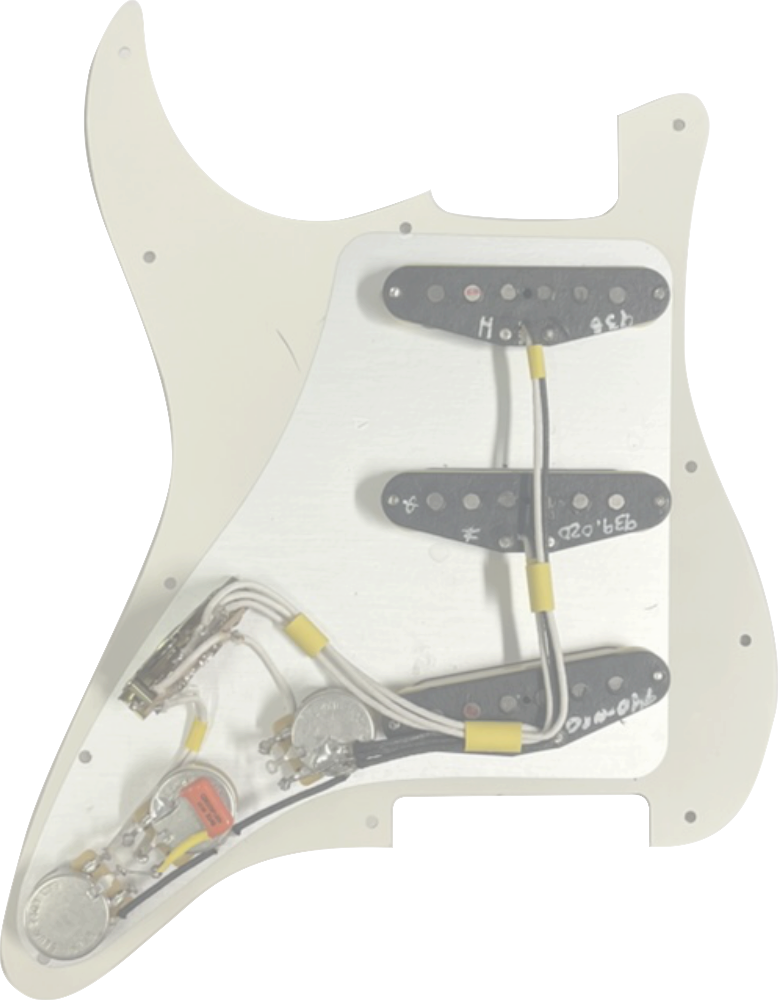

Electric Guitar Build
..Feb 2024
Introduction
Over the course of 2023-2024 I built an electric guitar with no woodworking experience. I had been inspired by reading about other beginners who had been able to build guitars, so I've written up my experience.Motivation
Stars aligning I had been watching videos of people making guitars on Youtube, and follwing the r/Luthier subreddit for some time. I really wanted to try it and there were a few things that made this the right time. I'm doing a PhD in physics which affords several luxuries: access to lab space and hand tools. Flexible free time. I had just come back from a few intense weeks working at a lab in florida, and it seemed like having a go at this hobby would be a good idea. I had enough for my thesis and could look into other stuff. I was concerned about spending too much money on something that wouldn't work. I bought a set of chisels and had a go on some scrap pine I found. Knowing that I would have more control on a piece of hardwood, I decided I could probably do okay.
Constraints
Didn't want to commit too early, so decided to use hand tools mostly Neck hardest so start on that. Didn't want to invest in too many tools. Hardest part was a sturdy bench. I can always learn to play slide. * Break down into lots of little problem solving tasks I made a lot of the discisions along the way. I can work weekends and evenings, but often visiting Florence. Why a stratocaster. I had been playing the same electric guitar for 10 years, during which time I had come to appreciate the Single coils.The Fender Stratocaster

The Fender stratocaster is a classic electric guitar design which combined several important technical innovations. Innovations: bassically a plank. Mass produced. Precision level. Lots of ways to correct. Bolt on neck. workhorse. Light, small scale length. Established design with resources. It's an organic shape which is simply and elegantly constructed from the requirements of the design
Biggest Challenges: neck feel. - just be as precise as I can Neck pocket- Screws and lt physics Fretting precision. - Tuning problems inherent, fractional errors, adjustable bridge, compare to wind, the guitar tuning problem Tuning stability - remove tremolo- also not how I play. (jazz) Hand tools as far as possible What I wanted most: intimacy, to see my mistakes, something which will agePlan
Plans taken from the internet, mostly from 60s strats. The first decision was to use a rosewood fretboard glued on, as opposed to the classic maple fretboard. Although I love the skunk stripe on the back where the truss rod is inserted, I thought this would be hard to join. Also, If I mess up cutting the fret slots, then I don't have to replace whole neck. I opted for a "'60s-style" neck with the truss rod adjustment at the bottom. This was to avoid the tricky drilling a hole at an angle to access it from the top. For simplicity I used a modern dual action truss rod.
As for the body, my main concern was to have the right weight/feel. I craved tuning stability which is poor in my current guitar (bigsby), so I opted for a simple hardtail bridge. I do not use a tremolo in my style of playing. This choice also makes it easier to carve the body.
The first decision was to use a rosewood fretboard glued on, as opposed to the classic maple fretboard. Although I love the skunk stripe on the back where the truss rod is inserted, I thought this would be hard to join. Also, If I mess up cutting the fret slots, then I don't have to replace whole neck. I opted for a "'60s-style" neck with the truss rod adjustment at the bottom. This was to avoid the tricky drilling a hole at an angle to access it from the top. For simplicity I used a modern dual action truss rod.
As for the body, my main concern was to have the right weight/feel. I craved tuning stability which is poor in my current guitar (bigsby), so I opted for a simple hardtail bridge. I do not use a tremolo in my style of playing. This choice also makes it easier to carve the body.
Neck
I bought the maple for the neck budgeting that if I cocked it up, I had only paid £25 for a day of fun. The first trick was to hand plane it down which was quite hard. Cupping and moisture. Explain why truss rod needed.Body
I considered pine too soft. Light american ash. After my experience with planing the maple, I was happy to pay for pre-thicknessed-stable wood. At this point I bought a router.Accounting
The point of this is not to save money, but to craft something i love and learn about the craft. That being said the benchmark is a fender stratocaster MIM for about $600. YOu can't account for the hours. I had some tools already. My ceiling fell in, covering the cost of most of the guitar. Definitely value for money.| Part | Source | Price (£) |
|---|---|---|
| Neck | ||
| Maple Neck Blank | Exotic Hardwoods UK | 18.48 |
| Truss Rod | Amazon | 15.99 |
| Rosewood Fretboard Blank | Amazon | 15.79 |
| Bone Nut | Amazon | 3.99 |
| Fender Tuners | Reverb | 35.00 |
| Fender String Trees | Reverb | 11.98 |
| Fender 24 Vintage Frets | Reverb | 15.40 |
| Fimo Fret Marker Clay | Amazon | 3.99 |
| 120.98 | ||
| Body | ||
| Planed B-stock 2 Piece Ash Blank | David Dyke | 84.00 |
| Fender String Ferrules | Ebay | 10.95 |
| Fender Hardtail Bridge (Vintage Saddles) | Gear4Music | 21.99 |
| Neck Plate and Screws | David Dyke | 6.24 |
| 123.18 | ||
| Electrics | ||
| Fender '50s Vintage Modified Pickups | FB Marketplace | 110.00 |
| Fender Knobs, switch tip, Pickup Covers | Ebay | 22.95 |
| Pickguard (× 2) | Reverb | 9.90 |
| 500 kΩ CTS Pots (× 3) | Amazon | 6.49 |
| Pickguard Screws | Reverb | 3.20 |
| 6.6 ft Lacquered wire | Amazon | 5.99 |
| 0.022 μf Capacitor | Amazon | 3.00 |
| Copper Shielding Tape | Amazon | 8.99 |
| Input Jack and Plate | Reverb | 4.50 |
| Fender 5-way Switch | Reverb | 13.90 |
| 188.92 | ||
| Finishing | ||
| Eastwood Butterscotch Blonde Nitrocellulose Lacquer Aerosol | Amazon | 16.99 |
| Dartfords FS500 Clear Gloss Nitrocellulose Lacquer | Amazon | 14.19 |
| 31.18 | ||
| Tools | ||
| Jack Plane | ||
| Set of 3 Chisels | ||
| Sharpening Stone | ||
| Sanding Blocl | Amazon | 2.95 |
| Fret Saw | Amazon | 15.64 |
| 9.5" Radius Sanding Block | Amazon | 12.49 |
| Electric Plunge Router | FB Marketplace | 40.00 |
| 1/2" Radius Router Bit | Amazon | 10.99 |
| 3/8" Flush Trim Router Bit | Amazon | 10.99 |
| 12 Draper Needle Files | Amazon | 14.31 |
| Clamps | ||
| Total | ||
Electrics
The tone produced by the electric guitar is shaped mostly by the pickups and the amplifier. As this is so critical to the character of the instrument, I wanted to do this properly. I bought fender pickups of fb marketplace, which turned out to be the ones he'd taken out. No matter I still like them. I went "'50s style"- because I like the sound. expensive CTS pots. Rewired with solid cloth-lacquered wire, because it looks beautiful and is a pleasure to work with. Routed hole for a larger potentially gold foil. Considered wiring mods, but wanted to learn strat language first. Chose off white pots becuase I like how the off white tones work together.
